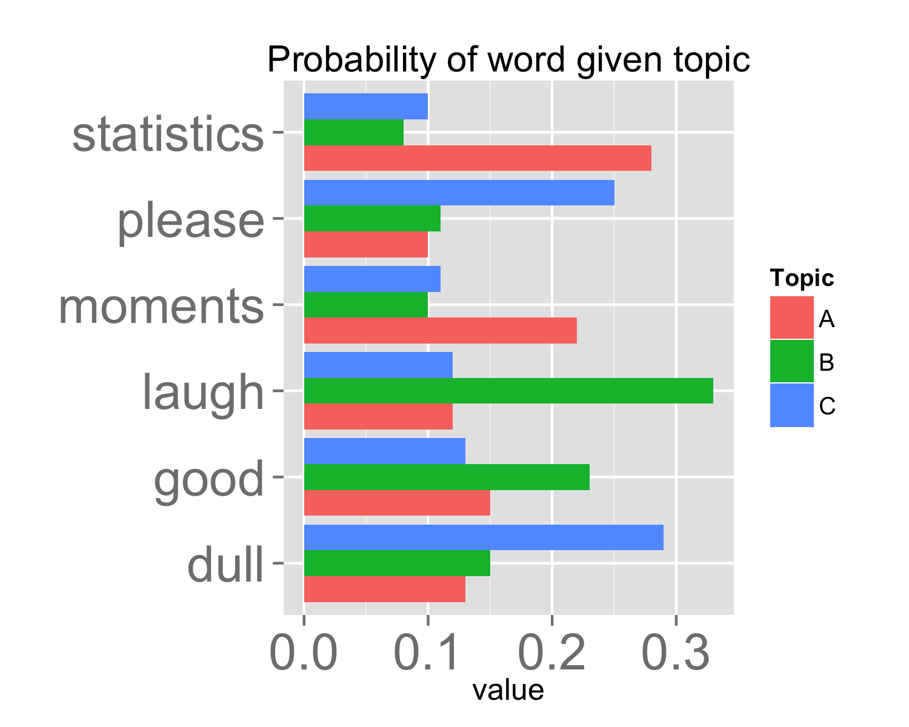
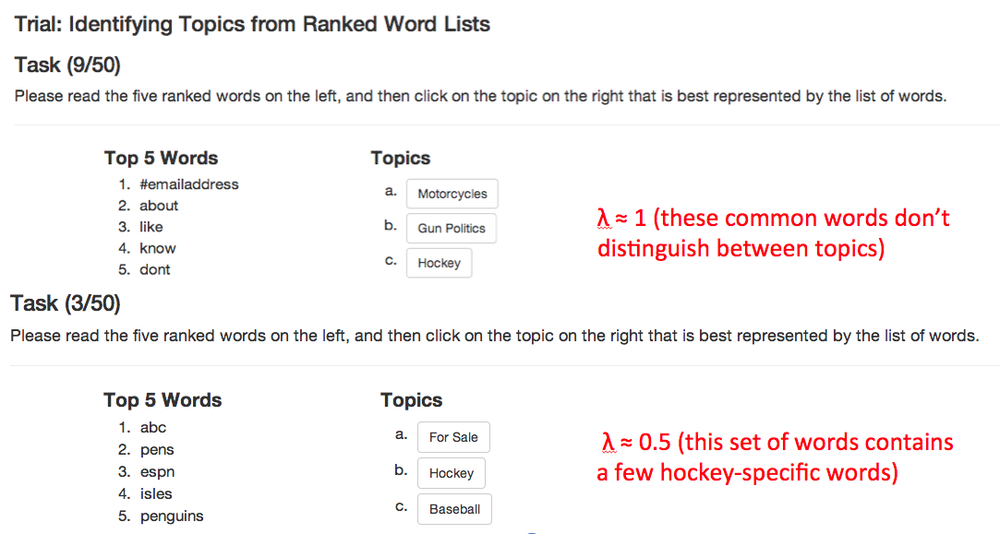
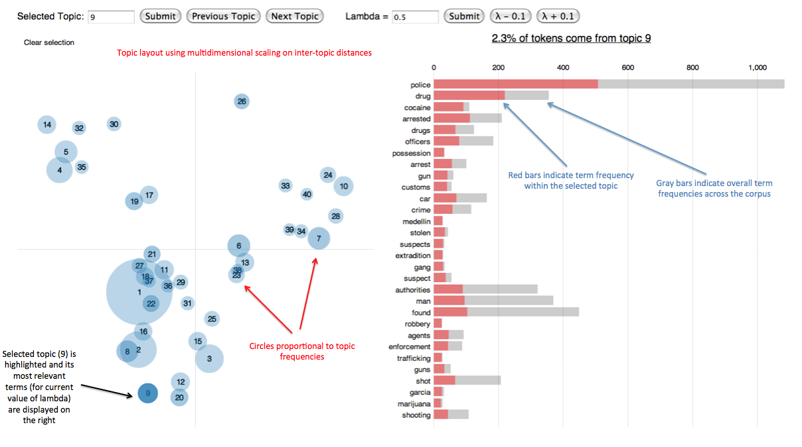
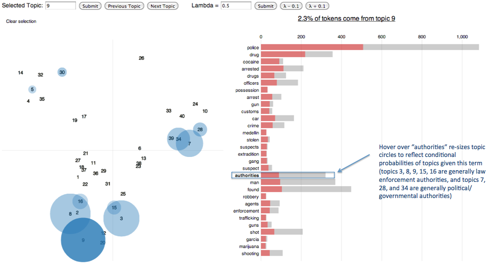
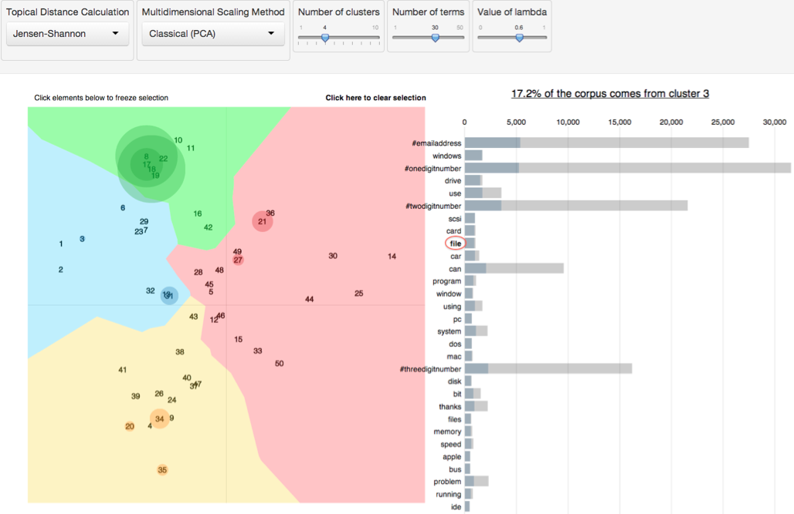

Follow along – http://cpsievert.github.com/slides/LDAvis
What is a topic model?
- Topic models discover 'topics' that occur in a collection of text:
Statistics may be dull, but it has its moments.
- 67% topic A, 33% topic B.
Please laugh.
- 50% topic B, 50% topic C.
Laughing is good.
- 100% topic C. 
Towards topic interpretation
- Each topic owns a different probability mass function over the same set of words (i.e. vocabulary).
- Problem: Topics are not easily interpretable and vocabulary size is often very large. Where should we put our focus?
- Typically, one produces a ranked list of words deemed important for understanding a given topic; but how should we measure importance?
- Measure 1: \(p(w_i|z_j)\) – probability of word \(w_i\) given each topic \(z_j\).
- Drawback: common words tend to appear near the top of such lists for multiple topics, making it hard to differentiate topics.
- Measure 2: \(\text{lift} = \frac{p(w_i|z_j)}{p(w_i)}\) where \(p(w_i)\) is overall probability of word \(w_i\).
- Drawback: Rare words tend to receive too high of a ranking.
- We believe that a compromise between these two measures can aid topic interpretation: \[ \text{relevance} = \lambda * p(w_i|z_j) + (1 - \lambda) * \text{lift} \]
User study


A few remarks
- We anticipate this 'optimal' value of \(\lambda\) will vary for different datasets.
- For this reason, it is nice to have an interactive tool that quickly iterates through word rankings (based on different values of \(\lambda\)).
- The
Rpackage LDAvis makes it easy to create an interactive visualizations to aid topic interpretation.



Some links
- LDAvis on GitHub (see README.md) – https://github.com/cpsievert/LDAvis/
- Reach me on Twitter @cpsievert
- Thanks for coming!